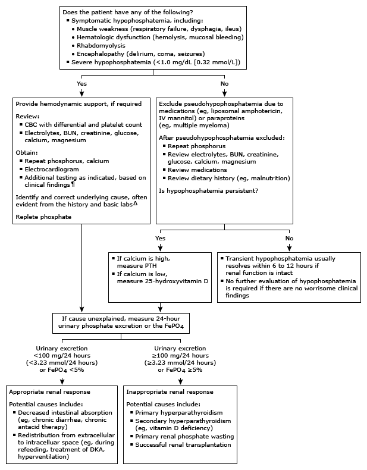

BUN: blood urea nitrogen; CBC: complete blood count; DKA: diabetic ketoacidosis; FePO4: fractional excretion of phosphate; PTH: parathyroid hormone.
* The normal range for serum phosphate is approximately 3.0 to 4.5 mg/dL (0.97 to 1.45 mmol/L). Interpretation of a specific abnormal test result should be based upon the reference range reported with that result.
¶ Life-saving interventions should not be delayed while awaiting the results of diagnostic testing.
Δ Refer to UpToDate table on causes of hypophosphatemia.